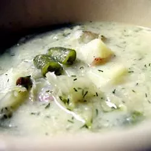

Main index
Russian Green Bean and Potato Soup

Description This is a recipe that I found in a vegetarian cookbook years ago. I have
modified it to my liking and have made it ever since. It's a hearty soup with a great
flavor. Add seasonal veggies for more variety. Enjoy!
Ingredients
- 1 tablespoon vegetable oil
- 1 large onion, halved and thinly sliced
- 4 red potatoes, cubed
- ½ pound green beans, cut into 1 inch pieces
- cups vegetable, chicken, or beef broth
- tablespoons whole wheat flour
- cup sour cream
- ¾ cup sauerkraut with juice
- 1 tablespoon chopped fresh dill
- Salt and pepper to taste
Directions
Steps
- Heat vegetable oil in a large saucepan over medium heat. Stir in the onion, and gently cook until softened and translucent, about 5 minutes. Add the potatoes and green beans; cook until the green beans have slightly softened, about 5 more minutes.
- Pour in the vegetable stock. Bring to a boil over high heat, then lower heat to medium-low, cover, and cook until the potatoes have softened, about 15 minutes. Stir the flour into the sour cream, and add it a spoonful at a time to the simmering soup. Stir in the sauerkraut and dill, season to taste with salt and pepper. Simmer for 5 minutes more before serving.